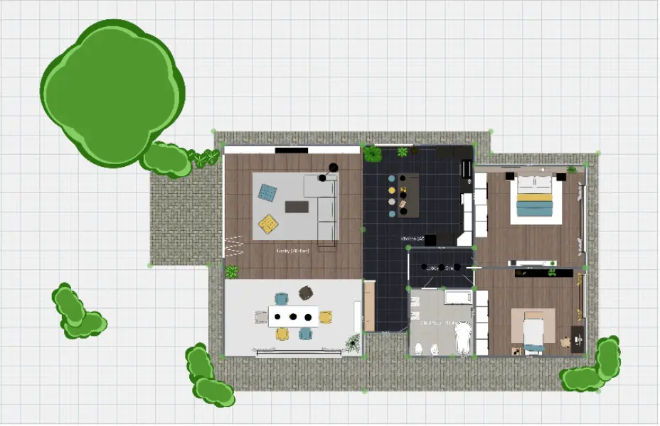
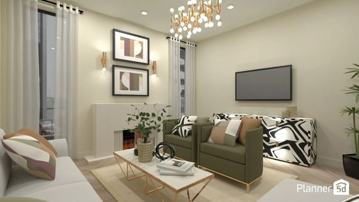

Planner5D 版本进化记：每一次大更新都在给设计「减负」
从只能在网页上画方方正正的墙，到上传一张户型图让 AI 自动建模，再到用自然语言直接改弧形墙——Planner5D 的迭代逻辑，藏着团队对「设计效率」这件事的死磕。
现在这版：把最耗时间的事交给 AI
我最近一次打开 Planner5D，是朋友发了一张手机拍的户型草图，想让我帮她看看怎么改。换作以前，我得先在网页版里一堵墙一堵墙地画，对齐尺寸、开洞、加门窗，光结构就得耗大半小时。但这一次，我直接把那张照片丢进了上传户型图的入口。
等了大概七分钟，AI 处理完成——墙体、门窗位置甚至房间功能都自动识别出来了。有些偏差，比如一面外墙的长度差了二十公分、一扇窗的开启方向反了，但这些都是选中拖动就能改的事。真正让我愣了一下的是，我对着编辑器说了句"把客厅南面那道直墙改成弧形，弧度向外"，编辑器里那面墙就真的弯了。
Copilot 不是第一次出现，但这次的弧形墙改造让我突然意识到，Planner5D 已经不是我记忆里那个「画墙工具」了。

来路：从方形房间到弧形墙，团队踩了哪些坑
样本文档没有给版本号，但从功能成熟度和文档覆盖范围反推，早期那几版的 Planner5D 其实相当朴素——墙体是直的，房间是方的，门窗只能贴在平面墙上开洞。网页版是主战场，移动端只能看和调家具，画结构这件事从来都得在电脑上做。
门窗工具应该是最早就有的核心功能。快捷键 D 和 Q 分别对应门和窗户，在墙上一点就自动开洞嵌入——这个逻辑至今没动，说明团队一开始就把「快速操作」当底线。但真正让我觉得他们开始想「不只是画墙」的，是弧形墙那版。
弧形墙憋了不止三个版本才来。最早只能画直线，后来有人提能不能做个圆形房间，团队先给了圆形和半圆形的房间预设；再后来才出了 Alt 键拖动转弧形的操作，紧接着是右键菜单「转换为弧形墙」。每一步都不激进，先给用户一个能用的方案，再补精度和参数面板。具体的操作细节和参数范围，去 Planner5D文档 翻一下最清楚。

然后就是 AI 系列功能的集中爆发期。Smart Wizard 先出，帮你给空房间填家具；接着是户型图片识别——Premium 用户独享，上传 PDF 蓝图或手机照片，等几分钟直接拿到可编辑的 3D 项目；最近的版本里 Copilot 越来越强，从只能加门窗到能改弧形墙、能改门窗开启方向、能说"把所有阳台门改成推拉门"这种批量指令。
迭代规律：什么一直在死磕，什么一直没管
把这些功能按时间线排起来，你会发现 Planner5D 团队的优先级出奇一致——他们一直在死磕「让用户少动手」。
户型识别跳过了最耗时的「从零画墙」阶段，Smart Wizard 跳过了「家具布局」阶段，Copilot 跳过了「手动调整参数」阶段。三个功能刚好对应设计流程里最耗体力的三步，而且都是 Premium 订阅的核心卖点——这不是巧合，是一个很清晰的产品策略：用 AI 能力锁付费，用跨平台免费能力拉新——免费版从 Planner5D下载 就能拿到基础绘图功能。
但有一件事他们一直没管：移动端的绘图能力。样本文档里写得很直白——移动端不支持直接绘制弧形墙，触屏操作限制。圆形和半圆形房间可以用预设，但弧形墙只能在网页版画好再打开看。我试了一下，手机上连直墙的微调都比网页版麻烦，更别说复杂的异形房间了。团队明显在刻意保持「移动端 = 消费端、网页端 = 生产端」的分工，没打算让手机也能画图。
跨平台同步倒是一直在补。网页版画好的项目手机打开能继续调家具，手机上识别的户型图回到电脑上能继续改结构——这说明他们想让用户在不同场景下用不同设备完成同一个项目，但始终没让手机承担「从零开始」的生产职责。
下一步会怎么走：从迭代节奏推的预判
照这个路线，我觉得下一两个大版本大概率会集中在几个方向。
第一是户型识别的精度和速度。样本文档里反复提到"AI 不是 100% 完美，需要手动核对"，这其实是个可以持续打磨的点——如果矢量 PDF 能做到一次到位、手机拍的草图能把墙体长度误差控制在五公分以内，那 Premium 的吸引力会直接上一个台阶。
第二是 Copilot 命令的覆盖面。现在能做的是加门窗、改墙形、批量改家具样式，但还做不到"把这个三居室改成四居室"这种结构性的大改。如果 Copilot 能理解房间功能和空间逻辑，比如把阳台封起来改成书房时自动处理墙体和门窗，那它就不只是个快捷工具，而是真的能当助手用了。
至于移动端能不能画弧形墙？我的判断是短期内不会。触屏绘制弧形的体验本身就难做好，而且如果真做了，团队可能得重新想清楚移动端和网页端的功能边界——这件事比单纯加个功能要复杂得多。
收尾
我翻了一下资料来源，发现这套文档在 GitHub、Gitee、GitCode 三个平台都能拿到——有时候国内网络环境下，换个仓库访问会顺畅得多。